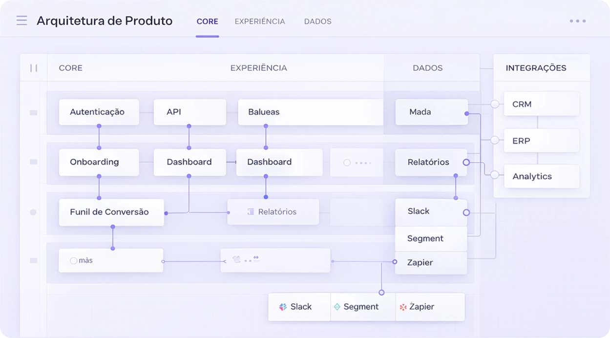
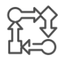

FluxosAcreditamos que clareza não é só estética, é estrutura. A Clarify atua na base dos produtos digitais — reorganizando camadas, eliminando redundâncias e reconstruindo arquitetura para restaurar coerência sistêmica. Isso se traduz em eficiência operacional, melhor performance de conversão e escala sustentável.
Como estruturamos o
crescimento
Simplificação
de Fluxos
Redesenhamos jornadas para reduzir pontos de decisão desnecessários e eliminar etapas redundantes
Racionalização
de Interface
Redesenhamos jornadas para reduzir pontos de decisão desnecessários e eliminar etapas redundantes
Auditoria de
Funcionalidades
Redesenhamos jornadas para reduzir pontos de decisão desnecessários e eliminar etapas redundantes
Arquitetura de
Conversão
Redesenhamos jornadas para reduzir pontos de decisão desnecessários e eliminar etapas redundantes
Nosso Processo
- 01
- 02
- 03
- 04
O que nossos
clientes dizem

Rafael Mendes
Founder & CEO — SparkHive
"Mapeamos gargalos que travavam avancos simples e reorganizamos os fluxos mais criticos. Em duas sprints, o time reduziu retrabalho e voltou a entregar com ritmo previsivel."

Eduardo Salazar
Founder & CEO — NextRise
"A principal virada foi transformar complexidade em prioridade clara. Saimos de discussoes longas para um plano objetivo de execucao, com etapas curtas e criterios de decisao compartilhados entre produto, design e tecnologia."

Clara Carvalho
CEO — Lumis Growth
"Estavamos crescendo sem consistencia, com cada area puxando para um lado. A nova arquitetura conectou dados, aquisicao e produto em um unico fluxo de decisao, trazendo previsibilidade de performance e base real para escalar."

João Silva
Founder & CEO — VentureAlpha
"Antes, as iniciativas eram isoladas e os indicadores nao conversavam. Com a reorganizacao das prioridades e dos ritos internos, o time ganhou foco, reduziu friccao operacional e passou a decidir com mais seguranca."

Silvana Palmas
CEO — Nexora Tech
"Descobrimos gargalos invisiveis na jornada e nas integracoes internas que drenavam energia do time. Ao redesenhar as etapas-chave e definir guardrails de execucao, melhoramos conversao, retencao e previsibilidade de receita sem aumentar complexidade. O resultado foi crescimento mais solido, com operacao leve e decisoes orientadas por evidencias."
Empresas que já confiaram na metodologia

Clareza estratégica para o próximo nível de crescimento
Descubra onde estão os maiores gargalos e oportunidades de crescimento do seu software agora.
Crescimento não é sobre fazer mais. É sobre estruturar melhor.
Crescimento não é sobre fazer mais. É sobre estruturar melhor.
Crescimento não é sobre fazer mais. É sobre estruturar melhor.